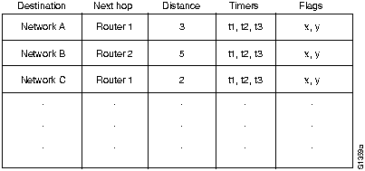
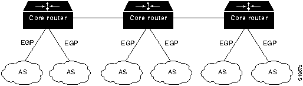
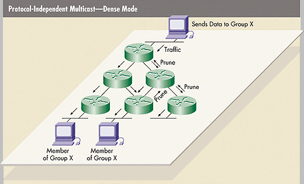
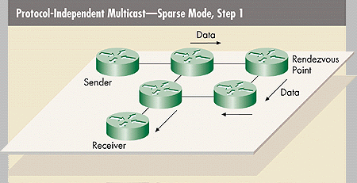
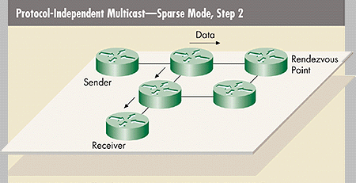

Routing and Multicast


| Message | Function |
| Neighbor acquisition | Establishes/de-establishes neighbors |
| Neighbor reachability | Determines if neighbors are alive |
| Poll | Determines reachability of a particular network |
| Routing update | Provides routing updates |
| Error | Indicates error conditions |


